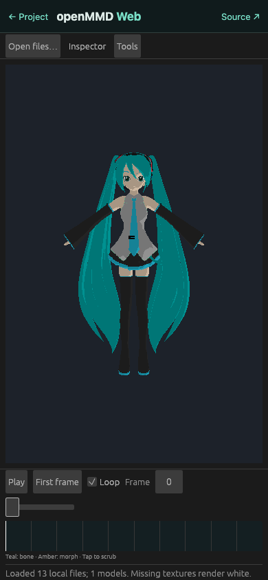

导入你的模型。
将 PMD 或受支持的 PMX 文件与纹理一起打开。也可以先试用内置的程序化演示模型。
开源代码，开放舞台。
带上熟悉的角色，
开启新的创作。
使用 Rust 和 wgpu 重新构建的独立 MMD 兼容动画编辑器，支持桌面和浏览器。
无需安装 · 本地文件 · 需要 WebGPU

01 / 你的工作区
带纹理的视口、骨骼和变形控制，以及动画时间轴。熟悉的工具，建立在开放的基础之上。



将 PMD 或受支持的 PMX 文件与纹理一起打开。也可以先试用内置的程序化演示模型。
移动骨骼、调整面部变形，并导入 VPD 姿势。支持撤销和重做。
播放 VMD 动作、编辑骨骼和变形关键帧，并跟随相机和灯光动画轨道。
02 / 不止于模型
可以在加载模型前导入相机和灯光 VMD。支持跟随镜头、播放可见性和 IK 开关，并单独导出场景动画。
PMM v1/v2 的编辑功能持续完善中，包括桌面版的相机和灯光关键帧编辑。兼容性仍不完整。
了解 PMM 支持
03 / 项目状态
这是早期版本的编辑器。完整的 MMD 着色、物理、配件和 PMM 行为仍在开发中。
| 格式 / 系统 | 当前支持 | 尚待实现 |
|---|---|---|
| PMD模型 | 已实现部分功能 网格、漫反射纹理、骨骼、顶点变形和基础 IK。 | 刚体物理、完整材质和与 MMD 一致的 IK 行为。 |
| PMX 2.0 / 2.1模型 | 部分支持 网格、四骨骼权重、骨架、顶点变形和漫反射材质。 | SDEF/QDEF 使用线性蒙皮近似。高级变形和骨骼行为尚未计算；不接受软体。 详情 ↗ |
| VMD / VPD动作 / 姿势 | 动作与场景轨道 骨骼和变形动画、相机和灯光播放、可见性与 IK 开关。支持 VPD 导入和导出。 | 保留自阴影关键帧，但尚未渲染。相机变换和 IK 使用近似实现。 详情 ↗ |
| PMM v1 / v2项目 | 部分编辑功能 骨骼和变形轨道、相机和灯光播放，以及关键帧编辑。 | 配件、物理、阴影和完整编辑器设置尚未支持。相机与 MMD 的一致性未经验证，请保留原始项目。 |
| WebGPU / WASM浏览器 | 可用的浏览器版本 本地文件、共享渲染与动画、关键帧编辑和导出。 | 需要支持 WebGPU 的浏览器。高级曲线和 PMM 相机及灯光关键帧编辑仅限桌面版。移动端 GPU 支持取决于设备和浏览器。 |
| macOS / Windows / Linux桌面 | 三平台 CI 验证 在三个平台上运行构建和常规测试。 | 桌面 GPU 播放目前已在 macOS 上验证。Windows 和 Linux 的运行时测试尚待完成。 |
发现了可复现的差异？ 帮助改进兼容性 ↗
git clone https://github.com/LakoMoor/openMMD.git
cd openMMD
cargo run --release需要 Rust 工具链，暂未提供预构建版本下载。